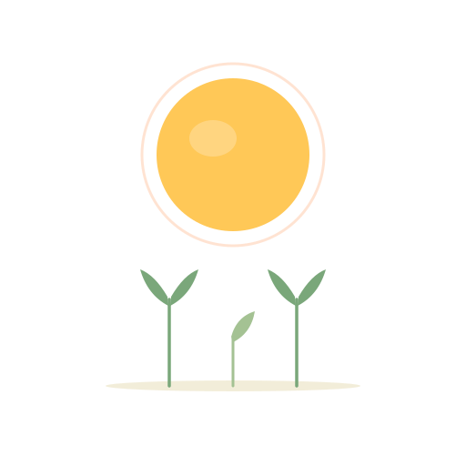

ひだまりこそだち18問・約3分。子育ての「正解」を決めるものではありません。いまのわが家の傾向を、8つの風景にしてお返しします。
3つの見方で見ています
主導権：導く ⇔ 委ねる
構造性：整える ⇔ 流れる
応答性：寄り添う ⇔ 見守る
どちらの極にも、子の育ちを支える道があります。順位はつけません。
回答は匿名で集計に使わせていただきます（お名前・メールアドレスは取得しません）。 くわしくはプライバシーについて。
いま、子育てでいちばん気になっていることを、よかったら一言だけ教えてください。
書かなくても結果は出ます。いただいた言葉は、これから書く記事のために読ませてもらいます。
あなたのこそだちタイプ
どれも「正解」ではなく、育ちを支える別のやり方です。近い風景も、まったく違う風景も、読んでみてください。